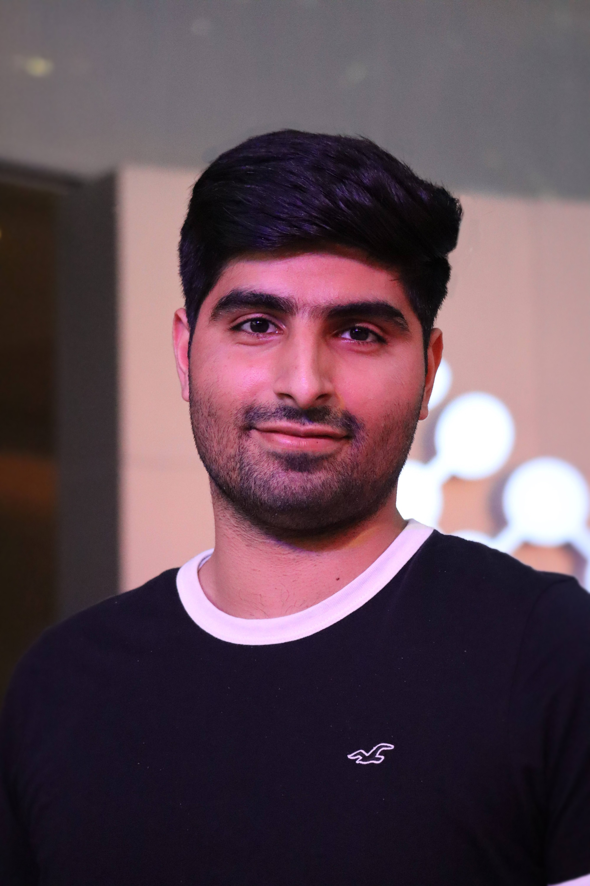

|
Muhammad Huzaifa I am a doctoral researcher at the CISPA Helmholtz Center for Information Security, Saarland University, and the Tübingen AI Center, under the supervision of Prof. Mathieu Salzmann. I am also a visiting researcher at the Mohamed bin Zayed University of Artificial Intelligence (MBZUAI). My research focuses on efficient deep learning, with an emphasis on model compression and optimization for real-time applications. I am particularly interested in developing techniques that enable the deployment of deep learning models on resource-constrained devices while maintaining high performance. Prior to my PhD, I completed my Bachelor's degree in Computer Science from the National University of Sciences and Technology (NUST) in Pakistan. During my undergraduate studies, I developed a strong foundation in machine learning and computer vision, which fueled my passion for research in these areas. I have published several papers in top-tier conferences such as ICCV, ICML, and TMLR, and have had the opportunity to present my work at various international venues. My research has been recognized with awards such as the EPFL IC Distinguished Service Award. I am committed to advancing the field of efficient deep learning and contributing to the development of innovative solutions that can have a real-world impact. I’m looking for collaborations in security and privacy. Feel free to email me to discuss further. Early-stage researchers: if you’d like to discuss research, graduate applications, or anything else, email me. If you prefer to schedule a call, you can book a slot here: calendar link. Email / Linkedin / Github / Scholar / CV / Twitter / Bluesky |
 |
{kind=link}
 |
News
[2025-11] Started PhD. at CISPA.
[2025-11] One paper accepted by CVPR 2026.
[2025-07] Started Research Assistantship at Tübingen AI Center under Prof. Hilde Kuehne.
[2025-07] TTA accepted by WACV 2025.
[2025-06] ObjectCompose accepted by ACCV 2024.
[2025-02] Defensive Diffusion paper accepted by MIUA 2023.
[2025-02] Awarded fully funded Master Scholarship at MBZUAI.
[2025-02] Awarded fully funded Master Scholarship at MBZUAI.
[2025-02] Awarded fully funded Master Scholarship at MBZUAI.
[2025-02] Awarded fully funded Master Scholarship at MBZUAI.
[2025-02] Awarded fully funded Master Scholarship at MBZUAI.
|
|
Selected PublicationsFull publication list → |
|
|
|
Temporally Compressed 3D Gaussian Splatting for Dynamic Scenes
Saqib Javed*, Ahmad Jarrar Khan*, Corentin Dumery, Chen Zhao, Mathieu Salzmann BMVC, 2025 project page / arXiv / code TC3DGS compresses dynamic 3D Gaussian representations using pruning, mixed-precision quantization, and trajectory interpolation, enabling efficient real-time applications. |

|
Self-Ensembling Gaussian Splatting for Few-Shot Novel View Synthesis
Chen Zhao, Saqib Javed, Xuan Wang, Tong Zhang, Mathieu Salzmann ICCV, 2025 (Oral, 0.6% acceptance rate) project page / arXiv / code SE-GS enhances novel view synthesis by reducing overfitting through uncertainty-aware perturbations and temporal regularization, outperforming existing methods. |
Miscellanea |
Experience |
Meta, Research Intern - Meta Reality Labs.
Logitech, Research Intern - Immersive Video Conferencing. Agile Robots AG, Research Intern - Applied Machine Learning. Max Planck Institute, Research Intern - Deep Learning on FPGA. BMW Group, Autonomous Driving Campus, Research Intern – HW/SW Optimization of CNNs. GE-Healthcare Intern – Software Development and Testing. Siemens AG Research Intern – Deep Learning Model Deployment. Intel Working Student – Software Development. |
Academic Service |
Reviewer, CVPR 2026, 2025, 2024, 2023
Reviewer, ICLR 2026, 2025 Reviewer, ICML 2025 Reviewer, NeurIPS 2024 Reviewer, ECCV 2024 Reviewer, ICCV 2025, 2023 Reviewer, ACCV 2024 Reviewer, TPAMI |
Teaching Assistant |
Introduction to machine learning CS-233, Fall 2022, Spring 2023,2024,2025.
Probability and Statistics MATH-232, Fall 2023. Responsible Software CS-290, Fall 2024 |